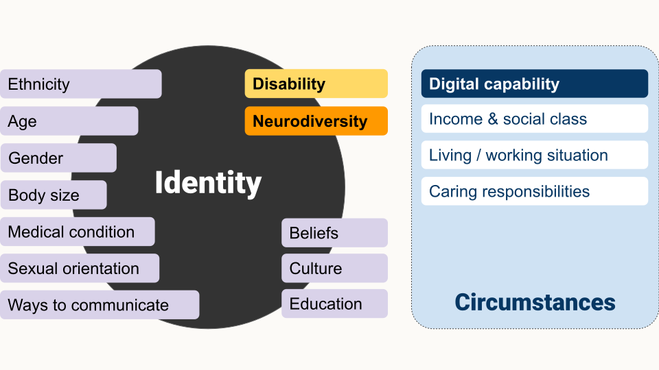
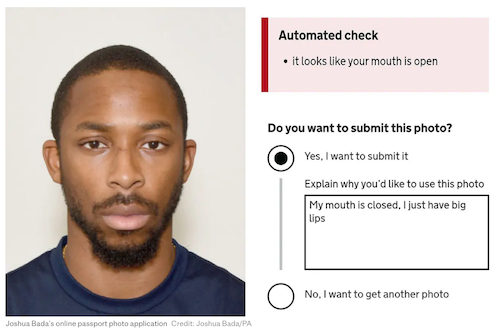

To Accessibility ... and beyond!
This page is an alternative format for the slides, which includes my speaker notes.
But if you prefer, you can access a link to the Google slides or you can download a PowerPoint file (7.8MB) - which should be accessible.
What this talk is about:
In this talk, I start with accessibility, neurodiversity and digital capability, and go beyond by looking at people’s context. I introduce the concept of universal barriers, which shifts the focus from the individual to the barriers anyone can face, using my own personal experience of applying for the EU Settled status to illustrate inclusion issues.
I give recommendations to deliver inclusive services and to improve ways of working, so inclusion for the end users also start within your own Agile team.
The session format is 45 mins talk and 15min for questions.
Participant takeaways:
- a better understanding of the various aspects of inclusion
- introduction to the concept of universal barriers
- recommendations to deliver inclusive services and to work in a more inclusive way as an Agile team
- resources to explore further after the session
Being inclusive
Accessibility ...and beyond
Speaker notes:
When you are delivering services and products, you start with accessibility, to include disabled people, more and more now, people think about neurodiversity as well which is good.
Some might argue that this is part of accessibility, but many neurodivergent people do not consider themselves disabled, so I chose to represent it as different shape on this slide but still overlapping with accessibility.
And then, some people go beyond and also think about digital capability.
This is where we want to include people who might not be able to go online either because they have no access to internet, or people might lack the skills or the confidence to use internet.
The shapes on the slide overlap because many people in these groups do not fit nicely in just one category.
I will also go further than this in term of inclusion, but first I want to cover the bases.
Accessibility
1 in 4 people are disabled in the UK
A disability can affect your vision, your hearing or your speech.
It can be a physical disability or a cognitive disability, this means it affects your memory, or how you process things, communicate and think.
It can also be a mix of more than one disability.
In fact,it’s quite frequent that people have more than one disability and they are not always visible to others.
It’s different for everyone.
Source for 1 in 4: disability prevalence by age group - GOV.UK
Defining accessibility
“Accessibility means that people can do what they need to do in a similar amount of time and effort as someone that does not have a disability.
It means that people are empowered, can be independent, and will not be frustrated by something that is poorly designed or implemented.”
Source: GOV.UK Blog post
2 Models to consider disability
| Medical model | Social model |
|---|---|
| A person is disabled by their impairments or differences | A person is disabled by society not accommodating their impairments |
| → use: ‘people with disabilities’ | → use: ‘disabled people’ |
| → look at what is wrong | → look at what the person needs |
During this session I’ll be using the social model of disability, which is what we should be using in the UK.
Neurodiversity
As mentioned before, it can be considered as a subset of accessibility and when we talk about cognitive disabilities, it’s often related to neurodiversity.
An umbrella term
Neurodiversity is an umbrella term which cover conditions like:
- Dyslexia
- Autism
- ADHD (=A ttention Deficit and Hyperactivity Disorder)
- Dyspraxia
- Dyscalculia
- OCD (Obsessive Compulsive Disorder)
- and more
There is a lot of overlap between these conditions.
How it affects people
- think, process information and language
- interact socially and communicate with others
- perceive space and time
Some of the symptoms can be experienced by anyone, but you should avoid saying you are ‘a bit’ ADHD, or ‘a bit’ OCD for example, because neurodivergent people experience this all the time.
In talk about ADHD, I’ve heard a speaker (Ben Raine) used this comparison: everyone might be out of breath at some point, but you would not say: “Oh I’m a bit asthmatic.”
1 in 7 people are neurodivergent in the UK
This is about 15 to 20% of the general population.
But it’s often underestimated and under-declared.
It’s much higher for people working in Tech.
→ above 20% and probably up to 50% in tech and the creative industry.
Speaker notes:
It’s often underestimated and under declared because even though things are improving, it’s still often perceived negatively, so people are wary of disclosing.
Many people don’t have a diagnosis, it takes a lot of time to get one, and some people are not even aware that they are neurodivergent, especially women, as the description of these conditions are still full of stereotypes and more representative of young boys than girls and even less of adult women who often have learned to cope and mask.
It’s very hard to have reliable numbers, I’ve got 3 sources:
- Major new report from the Tech Talent Charter reveals tech employers massively underestimate neurodivergence - We are Tech women (Feb 2024)
- What it’s like being neurodivergent in the creative industries - Creative review (Avril 2024)
- Written evidence given to a UK Parliament committee (PDF)
If you consider the people in your Agile team, it’s very likely that quite a few are neurodivergent.
I’ll come back to this at the end when talking about inclusion within your Agile team.
Digital capability
Access to internet in the UK in 2024
1.6 million people do not have internet
about 2.3%
16.8 million may struggle to interact with online services
about 23% - this nearly 1 in 4 people
(Source: Digital Inclusion Action Plan - GOV.UK Feb 2025)
How people access internet
People who do have access could still:
- have slow internet
- be data poor
- only have a mobile
- rely on old devices
- live in area where the network is unreliable
Speaker notes:
So it’s important to keep this in mind, to design services which people can access on an old mobile for example, without too much data and to have alternatives to access your service.
Most of the time, lack of resources is the reason why people don’t have access, but there might be other reasons.
For example, in case of cyber harassment, stalking or domestic abuse, some people might choose not to use internet anymore for their own safety. So it’s not always a lack of resources.
...and Beyond!
What makes a person’s identity?

Speaker notes:
We are going to look at what makes a person’s identity. On screen we have a big black circle to represent a person’s identity.
We already thought about considering potential disabilities a person might have or neurodivergence, so I’m adding these labels on the identity circle.
We also considered their digital capability, I’ve put the label for this on the side, because that’s not so much about their identity, but more about their circumstances.
So I’m making a new space to start thinking about circumstances that might actually impact you at a point in time.
For digital capability, you might be travelling and your network might not be reliable or you might be using a new device you are not familiar with or simply trying to do something new to you.
So this is our starting point, but there is a lot more to consider.
In term of identity, we could add ethnicity, age, or gender, but also things like body size, any medical condition you might have, sexual orientation, and the way you communicate.
And then there are also things like beliefs, culture or education.
So now it’s much more busy on this identity circle.
But just like for digital capability, your circumstances could also affect you a lot.
So under circumstances, I’m also adding income and social class, living and working situations and caring responsibilities.
All these things will affect your experience of services and products, but also how others will perceive you.
Inclusive design
Depending on what you are designing, if you overlook one aspect of the identity of your user, you might exclude some people without meaning to.
→ Inclusive design aims to respect the identity of the people using your service or product.
Common inclusion issues
Gender and Ethnicity
Problem: Asking in a way that doesn't allow you to identify yourself correctly
Solution
- do you really need to ask?
- research / test with your users

To resources about this:
- GOV.UK Design system: Ask users for Gender or sex
- GOV.UK blog post - Researching how we ask users about their ethnicity
Excluding same sex parenting
Parent’s information in terms which:
- exclude same-sex-parenting
- assume there are 2 parents
Only considering white people
… when testing your product
Artificial Intelligence to test if a photo is valid for example
Or the ‘racist’ soap dispenser only working on white skin

Speaker notes:
For Black people and afro hair, your photo might be rejected even though you respect the rules because the AI has been trained only or mostly with photos of white people.
'Racist' passport photo system rejects image of a young black man despite meeting government standards - The Telegraph, includes the photo of a Black man I’m using on this slide which generate an error message stating the it looks like your mouth is open even though he is respecting the rule and has his mouth closed.
On this, also check: Black man says racially-biased AI system rejected his passport photo - the next web article.
You might remember a video which was doing the rounds a while ago with a soap dispenser only working on white skin.'Racist soap dispenser' at Facebook office does not work for black people - YouTube video
Like for accessibility, testing with a wide range of people should help preventing the exclusion of people using your service in ways you might not have realised.
‘Your name is not valid’
Too short, too long, too many, special character and more …

If you are curious about names, check this article by Patrick McKenzie about lots of things you might not know about names: Falsehoods Programmers Believe About Names.
Shitfing the focus
Speaker notes:
Now that we have looked at the various aspects of the identity and some common inclusion issues, I’d like to shift the focus from the individual, to the barriers anyone can face instead. Because it might be better to look at it this way.
We tend to focus on set categories of people who are 'the problem', when in fact it's the design that excludes and it can happen to anyone.
Barriers arise for all people when a task exceeds their capacity
| Ability | Capability | Capacity |
|---|---|---|
| What a person can do in general, they have the skills to do it | What a person can do in a specific context (time and place) | What a person can do, taking into account what is going on for them |
| skill 1 | skill 1 | skill 1 |
| skill 2 | skill 2 | skill 2 |
| skill 3 | skill 3 | skill 3 |
| skill 4 | skill 4 | skill 4 |
Speaker notes:
Let me clarify what I mean by capacity.
Ability is what a person can do, in general, they have the skills to do it. So a person might have skill 1,2,3 and 4
Capability, is what a person can do in a specific context, depending on the time and space. The person might now only have skills 1 and 3
Capacity, is what a person can do, taking into account what is going on for them. In that case, they might only have skill 3 left.
So for example: I’m able to read something on my phone. I have this ability in general. It might be very sunny or if my battery is running out, I might be on saving mode and my screen could be less contrasted but even in this context, I might still have the capability to read.
But now, if I’m tired on top of things, or have a lot on my mind then I might not have the capacity to focus and read.
So it’s not just about ability, you need to take the wider context of the person into account as well.
Universal barriers
Some people working for the UK Government looked at categorising all the barriers people face, which could apply to anyone at any point in time. They call them universal barriers
11 universal barriers
| Awareness | Not knowing there is a service or a phone line to call for help |
|---|---|
| Enthusiasm | (Lack of) to go through a difficult process, to try the online version of a paper form |
| Access | To an office, a printer, a computer, a photo booth or a Citizen Advice Bureau |
| Time | To gather information, fill in forms, travel to a place, wait for an answer or in a call |
| Finance | To pay a fee, use a phone/ printer, get the bus, to be away from work, pay for childcare |
| Evidence | To provide bank statements, photo ID, character witness statements |
| Comprehension | Ability to understand the signage at a venue, written content, spoken advice |
| Self-confidence | Belief in ability to understand a process, complete tasks or deal with uncertainty |
| Interface and interaction skills | Ability to talk face to face, computer skills, handwriting |
| Emotional state | Feeling psychologically strong enough to take on a task, speak on the phone or face to face |
| Trust | Being confident that the technology and people involved will be secure and reliable |
These barriers don’t occur in isolation, they overlap and intersect

An example: Applying for the EU settled Status
| Barriers for me | Not a barrier for me |
|---|---|
| - enthusiasm | - awareness |
| - access (for my children) | - time |
| - evidence | - finance |
| - emotional state | - comprehension |
| - trust | - self-confidence |
| - interface & interaction skills |
Speaker notes:
I’m going to give you an example, it’s when I applied to the EU settled status.
When you think of someone experiencing barriers to use a service, you probably don’t think about me, a person who is actually working in digital and creating services as her day job…
Using the 11 universal barriers and looking at the time I’ve applied for the EU settled Status, here are some of those I’ve experienced.
Enthusiasm: I really didn’t want to apply and in fact when the service was launched, I was still really hoping it would not come to this, so I was in no rush to use this service.
Access: initially it was only available on Android, so 2 of my children could not apply from their iPhone and were relying on accessing an android device to apply.
Evidence: to justify my eligibility, I had to provide document to evidence this. The documents had to be in my own name, showing my address and the date they were covering.
5 years were to be covered and we were only allowed to upload 10 documents. For other document, I was unsure is they had to be in English, like for birth certificates?
Emotional state: succeeding or not was going to affect my ability to stay in the UK and it was also going to affect my children’s future.
I probably should also add here that, I’m using my own personal experience, but I realise that I’m still very privileged, because if I had to leave the country, there are other countries I could go to, and my life and my family would not be in danger so other people could be in a much worse emotional stress than this.
Trust: I had very little trust in the Home Office, and when asked to mail my passport initially, (which was not normally part of the process) I withdrew my application as the risk for my passport to be lost in the mail or by the Home Office felt too high for me. I also don’t trust the French authorities either to re-do one easily.
For others, awareness was going to be an issue if they didn’t watch the news or speak English, or thought that having British kids means they didn’t have to apply for example.
Not that long ago, in the news, there were a few cases of people who had physical documentation which they thought was still valid and that they didn’t have to apply for the EU settled status. But now they are at risk of deportation, so awareness is a huge issue.
Comprehension could have been an issue too for people who didn’t speak English well enough, and then the interface and interaction skills could also have been an issue, as well as self confidence.
11 universal barriers + 1

Speaker notes:
The universal barriers are a work in progress.
Personally I would make two changes to these barriers.
The ‘Enthusiasm‘ barrier could be better named, like ‘Motivation’, because when thinking about a service delivered by the public sector, I can’t think of any I would be enthusiastic to use. And it’s probably ok.
I think ‘Fear‘ should be a barrier in itself, it could be covered by the ’emotional state’ and ‘trust’ barriers, but when you work with refugees or victims of domestic abuse for example, there is a real fear that using some services might put you at risk.
Poverty can also make you really stressed when applying for services as some people fear that if they don’t do it right , they might lose benefits for example.
You could probably think of other things that are relevant to your own service or product.
You can use the barriers for inspiration and make it work for you, this is not set in stone.
Delivering more inclusive service and products
1. Start with accessibility
Only one part of inclusive design but well documented.
- think of it from the start
- involve disabled people at every stage of your research
remember: 1 in 4 people is disabled - don’t forget internal users
- everyone in your team needs is involved
Speaker notes:
As mentioned before, accessibility is only one part of inclusive design, but it is well documented.
Trainings are available, so it’s a really good place to start if you’re new to inclusion.
You need to think about it right from the start, not at the very end as it will influence your decisions all along.
1 in 4 people are disabled in the UK, so ideally, you should have a similar proportion of disabled people taking part in your research.
Also don’t just look at blind people using a screen readers - they are important - but try to also involve people who are neurodivergent, people with hearing or cognitive impairments, and more.
Don’t forget internal users, they could also have accessibility issues while delivering the service, so do think about them too.
And make sure everyone in your team understand how to avoid making things inaccessible without meaning to.
This isn’t just about colour and font choices, or about how the developer will have coded the interface: everyone has a role to play.
Back to the title of the talk: accessibility is great, but you need to go beyond this!
2. Digital capability: device - network
- make it work when the network is poor
- mobile first
- test on old devices
- offer alternative channels
Speaker notes:
You should consider the quality of the network they might have at a point in time. Ask your developers, they are ways to test how your app would function when the broadband speed is low, you can simulate that and optimise how things work in these conditions.
Design for mobile first and small screens, and test on these too. Some of your users might have old devices, and it’s not always a resource issue, more and more people are considering the environment and choosing to not always change their device for the latest one. So do not only test on the most recent version of operating system and browsers
If you can’t make it work will in all these conditions, think of alternative channels to access your service and product. It’s good practice anyway to not only offer online solution.
2. Digital capability: data
- provide a file’s link instead of only an option to download it
- if it’s not possible, provide the size of this file
- keep files like images big enough so the quality allows to see them well, but small enough that it doesn’t use too much data to load
→ it’s a balance to have between accessibility and digital inclusion
Speaker notes:
Still about digital capability, but this time looking at the data needed. It’s important to consider because your user might not have unlimited data, but also because it will improve the performance of your service or product and it’s better for the environment.
You should provide a file’s link instead of only providing an option to download the file, especially if it’s a big file if it’s not possible, then tell people the size of the file so they can decide if they have enough data to download it or not this empowers you users to choose where they want to download or not
3. Learn from people with lived experience
- go to them
- meet people on their terms
- reach out to organisations and communities
- understand the barriers and how to remove them
Speaker notes:
Ideally, you should design with people who will be affected by your service, and the people who deliver it.
It’s not easy: a lot of the barriers which could prevent people from using your service are also preventing them from taking part in your research. People might be time poor or have low trust in your organisation. Their emotional state might prevent them from doing it or they might not have access to what you need for them to take part in the research.
An alternative to researching with people directly is to reach out to organisations and communities. Find the best way for you to understand the barriers your users are facing and how to remove them.
Example: Numbers
Low numeracy affects half the working-age adults in the UK
- Plain numbers is an association which could help you do better.
- Accessible numbers project by Laura Parker
![Do…
round numbers up to the nearest whole number.
Do leave space around numbers.
Do fill in the information you already have.
Do use sentences to add context about numbers.
Do let people include spaces when entering numbers.
Do user research with people who struggle with numbers.
Do not…
use decimals unless it's money.
Do not overwhelm people with too much content.
Do not expect users to repeat or remember numbers.
Do not use tables or grids without explaining what the numbers mean.
Do not rush users to enter numbers accurately.
Do not force people to enter a number or do a sum to verify themselves.](assets/images/Accessibility-and-beyond/do-dont-low-numeracy.png)
Speaker notes:
Is your product or service asking or displaying a lot of numbers?
Did you know that low numeracy affect half the working-age adults in the UK?
Plain numbers is an association which could help you do better.
Check the Accessible numbers project by Laura Parker, and the poster Laura worked on with Rachel Malic and Jane McFadyen.
These 3 content designers who came up with a new do and don’t poster for designing for people with dyscalculia or low numeracy which I’m showing on this slide.
Check the blogpost explaining how they made this poster to learn more about it.
The Accessible numbers project has advice and podcast episodes for you to learn more about the problems and how to do better.
4. Ask for feedback
Feedback is crucial to keep improving your service or product
Your feedback process should be:
- accessible
- not only online
Speaker notes:
Make it easy for people to tell you when something is not right. Even if you have done a really good work, you are likely to overlook some issues, so this feedback is crucial to keep improving your service.
If your feedback mechanism is only online and not accessible, you are going to miss out on a lot of inclusion issues… So make sure the way you request feedback is accessible and not only online.
5. Challenge the things creating a barrier
Do you really need to:
- know the gender of a person?
- request 3 years of home addresses?
- request bank statements
“Every question you ask is another barrier” - David Dylan Thomas
Speaker notes:
"...It’s another gate you ask people to walk through to get to their destination, does that gate really need to be there?"
This quote is from a really interesting podcast episode: Design systems and cognitive bias with David DylanThomas - System of harm podcast by Amy Hupe
Inclusion within your Agile team
In this part, I’d like to focus on inclusion within your team.
Unless you have an amazing research culture in your organisation. you won’t be speaking with disabled people that often.
I think that the best way to have inclusion in mind for your users is to start to really change the way you work with your own team and your stakeholders, as you work with them every day.
There are no disabled people in my team
Neurodivergence in tech / creative industry: over 20% - probably up to 50%
→ people sometimes don’t declare their disability
→ many disabilities are not visible
Speaker notes:
You might be thinking, what is she on about? There are no disabled people in my team or among my stakeholders. And maybe you’re right.
But the problem is that people often think of disability as something that is visible and permanent.
Do you remember the statistic for neurodiversity? About 1 in 7 people in the general population but in tech and creative industries, it might be up to 50%
This is not visible. You might not know about it, but you surely should think about it.
Another thing to keep in mind is that people sometime don’t declare their disability to their employer/colleagues.
There might be different reasons, I can give you some of mines:
- before getting a role, I’m never completely sure people won’t hold this against me despite saying they don’t discriminate
- once I have the role, I usually don’t talk about it because people might then treat me differently, or give me unwanted advice, or won’t believe me
- I don’t want to be seen differently or have this used against me
These days I’m more open about it because I’m more experienced and if things do not work out for me, I just change role.
It’s a privilege, and I can do this because I don’t really need accommodations if I can work mostly from home.
But not everyone can do this, so this is why many people still don’t declare their disabilities, there might be other reasons as well.
Another reason you might have more disabled people working with you than you think is that many disabilities are not visible: like hearing and sight impairments, chronic pain and many more.
Things can change
- actual employees can become disabled
- you want to be able to hire disabled people
→ Make sure your systems, processes and practice are accessible for all
Potential issues in your Agile practice
- stand-up
- Fibonacci numbers to size the work
- ice breakers and other activities where you share with the group
Speaker notes:
The first thing I want to make you think about is the stand-up. If you are working remotely, you are probably not really standing-up.
The idea behind standing-up is to keep the meeting short and effective, but …. the team might get bigger, sometime people talk longer but some people in your team might not be able to stay-up for that long.
They might not tell you. There has been times for me where standing up for more than 20 min would be painful. I do not always feel comfortable telling the team this.
So I might make the effort and be in pain for the rest of the day. So do keep this meeting short if you are really standing and invite people to tell you privately if the stand-up is problematic for them.
Fibonacci numbers to size the work …. I’ve seen this done in a few places. The Fibonacci sequence is where a number is the sum of the 2 numbers coming before it.
So using this to size the work, you would have 1 for a small piece of work, then 2 and 3, and then it jumps to 5, 8 and 13 is usually the biggest number you can use as a size.
It might work for your team. The idea is to think twice and before giving a bigger size as the number looks much bigger.
But many people do not get it. Remember that half the working population has low numeracy? some people in your team might struggle. What worked with your previous team might not work with your current one. So be careful with that one, and use alternatives like teeshirt size if some people seem to struggle with it.
You need to be extra careful with activities where people will have to share with the group, like ice breakers, especially if you have neurodivergent people attending or people with a different culture, not everyone is ok to share with others and not everyone will have an easy answer to some of the questions you’re asking.
what you might consider fun might be difficult for someone else.
For example: what was your favourite subject at school - this might be super easy for you to answer, but others might not have had a good time at school and this can be triggering for them.
At the end I have slides with some resources and will provide links to good ice breakers.
Creating a safe space
Do not force people to disclose a disability or medical condition
→ offer help for everyone
Instead of providing accommodations for disabled people
→ offer various options to all
Invite for feedback and allow people to reach out privately
Speaker notes:
We talk about ‘accommodations’ for disabled people, but it’s better to offer various options to all instead, so it doesn’t sound like you are making a big effort just for them and that way, it will benefit more people who might not have requested anything even though they might need it.
Invite for feedback, and allow people to reach out privately: it’s not always easy to talk about your needs in public, or in a group during a meeting.
Don’t assume you know what is best
People don’t have the same needs even if they have the same condition, and needs vary in different contexts.
- always best to ask what would help
- have that discussion with the person
- do not assume you’re doing the right thing
Manual of me
- help you tell others what you need
- learn about what other people in your team needs
Do not make people share more than they are willing to
| Examples of sections |
|---|
|
Speaker notes:
A ‘manual of me’ can be a great tool to communicate what you need to work well with the rest of your team. I’ve been doing this in project teams for a while and found that it helps me to tell people what I need and also to understand them better.
Meetings
This one is very important and something that is often not done well: it’s about organising and presenting during a meeting or an event.
Do we need a meeting?
If yes:
- who needs to be there?
- does it have to be 1h or even 30 min?
- does it have to be face to face?
Speaker notes:
First thing first: do we even need a meeting? It’s important to think about this, maybe we don’t, and in that case, it’s ok to challenge it. We need to respect people’s time.
Maybe like the message on the mug on this slide, an email is enough?
If you do need a meeting, make sure you invite the right people, and think of how much time you need. It doesn’t always have to be for an hour, or even 30min. I’ve been in 20min meetings which were really efficient and useful.
Does it have to be face to face? Maybe be not.
Organising - hosting a meeting
- before the meeting: set expectations, provide an agenda, do it again at the start of the actual meeting
- invite people to tell you if this might not work for them
- if using online tools like Mural or Miro, plan for an alternative
- if over an hour → plan for a break and stick to it
- repeat the question someone asked before answering unless you’re sure everyone has heard/seen it
Presenting during a meeting
- share your slides at the start of a presentation or in your invite
- keep content short and simple
- use plain English, explain jargon and acronyms
- use a mic, speak facing your audience, camera on if online
- leave some space at the bottom of your slides
- describe any image/ diagram, assume at least one person cannot see
- don’t assume people can read the text on slides
To recap: We need to change our perspective
To Accessibility and beyond!

So we started focusing on accessibility and looking at neurodiversity which partly overlaps with it.
We went much wider and looked at identity, and I explained that for me, Inclusive design aims to respect the identity of the people using your service or product.
Next we looked beyond identity and talked about digital capability which starts looking at circumstances of a person.
Once you start looking at circumstances, you can think about the capacity of a person depending on their context and what’s going on for them and I explained that barriers arise for all people when a task exceeds their capacity.
Shifting the focus from the individual to the barriers anyone can face
I mentioned the 11 universal barriers people can face.
Keep in mind that these barriers are not set in stone, you can change them to make them work for your own products and services
Inclusion for our users and beyond too

We looked at how to deliver services and product more inclusive for our users.
I explained how to go beyond just thinking about your users and being more inclusive with your team as well in the way you work.
This is something you should also consider for your stakeholders, so you can engage them better in your design and delivery decisions.
Key takeaways
To deliver more inclusive products and services
- start with accessibility
- consider digital capability
- learn from people with lived experience
- ask for feedback
- challenge the things creating the barrier
To improve inclusion in your team
- do not assume there are no disabled people in your team
- consider neurodivergence and low numeracy in particular
- be careful with ice breakers
- do not assume you know what is best
- use manuals of me
More resources
About inclusion in general
- A beginner’s guide to inclusive UX design by Trina Moore Pervall
- A framework for full inclusion - Ben Carpenter
- The practicalities of inclusive service design by Fiona McAra-Hunter
- Building UX research practices for inclusion by Josh Kim and Maureen Barrientos ID24, 2022, YouTube video
- Inclusivity and content design, YouTube video by Content Teatime
About accessibility and neurodiversity
- Past videos (of the Accessibility Scotland conference)
- Inclusive Design 24 online and free and in particular this video: How to be inclusive to neurodivergent people - Rachel Morgan-Trimmer
- Public neurodiversity support center
- DWP Accessibility manual
- Estimate how many people using your website might be disabled
About digital inclusion
- Digital Inclusion Action Plan - GOV.UK Feb 2025
- Lloyds bank - UK Consumer Digital Index 2023
- Access to broadband - Research briefing - Sept 2023 - House of Commons Library
- Essential digital skills framework - GOV.UK - useful to assess your participants skills
Inclusion within your team
- Inclusive icebreakers – by Lizzie Cass-Maran
- Quick icebreakers for online meetings (that don’t suck) - Emily Webber
- Inclusive meetings: encouraging collaboration from all – by Co-op Digital Blog
- Manual of me
Some of my blog posts
- Different levels of inclusion awareness
- Inclusion in the workplace
- Avoiding misconceptions on your accessibility learning journey
- Removing barriers to inclusion
- Advice for speakers (to present in an accessible way)
- Is my website accessible?
- Applying for EU settled status part 1, part 2 and part 3